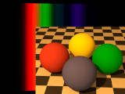
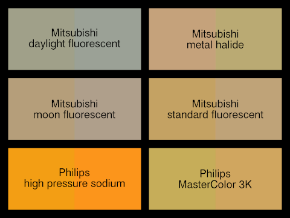

{kind=link}

 IntegrateLight is a library module from the Persistence of Vision Ray Tracer (POV-Ray) Object Collection that prepares spectra for use with Lilysoft’s SpectralRender package. The impetus for creating this module was to provide a more accurate render of lights with sharp peaks in their emission spectra by integrating spectral curves rather than by sampling them. However, it is useful for converting any continuous spectrum.
The user is also given better control over light source luminosities.
The italicized nnnnnn in some of the file names represents the 6-digit number that is in the name of the .zip file.
| Key Files | |
|---|---|
| File | Description |
integratelight.html |
The user manual (this document) |
integratelight.inc |
The IntegrateLight software |
integratelight_compare.pov |
Scene description files demonstrating the features of IntegrateLight |
integratelight_disperse.pov |
|
integratelight_scene.pov |
|
integratelight.jpg |
Sample output |
integratelight_compare.png |
|
integratelight_thumbnail.jpg |
|
| Administrative Files | |
| File | Description |
READMEnnnnnn.html |
Important information about using the POV-Ray Object Collection |
integratelight_description.txt |
A brief description of IntegrateLight |
integratelight_keywords.txt |
A list of keywords |
integratelight_prereqs.txt |
Prerequisites |
integratelight.css |
Other administrative files |
cc-LGPL-a.png |
|
Versionnnnnnn.js |
|
All file names in this module and all global and local identifiers defined in integratelight.inc comply fully with the Object Collection naming standards, as revised August 2008 and proposed August 2012. The prefixes for this module are “IntegrateLight” and “ILight,” including any uppercase and lowercase variants; to avoid conflicts, do not declare identifiers that start with these prefixes plus an underscore.
IntegrateLight reads files from Lightsys and SpectralRender, and references some of their identifiers. As Lightsys and SpectralRender are not part of the Object Collection, there is no guarantee that their identifiers will not conflict with those of compliant Object Collection modules. If necessary, most Lightsys identifiers can be destroyed by macro CIE_ReleaseMemory(), after all spectral colors and materials are defined, and there is no further use of the features of any of these three packages. (The identifiers that remain are those defined in lightsys.inc, lightsys_colors.inc, and lightsys_constants.inc. IntegrateLight does not use any of these files.) SpectralRender does not have a similar deallocation macro, but as of the release of IntegrateLight 1.0, its identifiers do not conflict with any compliant Object Collection modules.
Include these files once, in this order, prior to using any of the macros:
#include "spectral.inc" // from SpectralRender #include "integratelight.inc"
Including integratelight.inc more than once is harmless, but spectral.inc should be included only once. If the render halts with a message that it cannot find file CIE.inc, then Lightsys IV was not installed properly, or is not in the library path.
POV-Ray will issue a warning that the experimental feature spline is used. This is normal and expected.
SpectralRender samples Lightsys IV spectral curve splines rather than integrating them. This results in marked differences between some of the built-in SpectralRender lamps and the IntegrateLight equivalents. These lamps are the four Mitsubishi bulbs, the Philips high pressure sodium, and the Philips MasterColor 3K, as illustrated below. In the illustration, the left half of each rectangular swatch is the color of the lamp using SpectralRender’s built-in sampled values, and the right half is the color of the IntegrateLight equivalent.

The scene description file for this illustration is integratelight_compare.pov. A preview render of this scene (not illustrated), for which SpectralRender defers to Lightsys IV, shows that the IntegrateLight colors are very close to those yielded by Lightsys IV.
Note: In the Lightsys IV file espd_lightsys.inc, the spline ES_Phillips_HPS (the Philips high pressure sodium lamp) may contain the line 598, 0.2300. This line should be 498, 0.2300.
Macros ILight_Continuous() and ILight_Continuous() use numerical integration to prepare the spectra. Two methods are available: the trapezoidal rule and Simpson’s rule. The trapezoidal rule treats a spectral curve as a series of straight line segments, whereas Simpson’s rule treats the spectrum as a series of parabolic curves. For daylight illuminants (e.g., D65), the trapezoidal rule is sufficient at the default integral step of 5.
For the Normalization argument, use one of the following values:
ILIGHT_NONE
ILIGHT_MAX
ILIGHT_MEAN
ILIGHT_GRAY
.gray value is 1.0. The RGB value is calculated according to the current Lightsys color system and gamut mapping settings.
ILIGHT_GREY
ILIGHT_GRAY.
ILIGHT_XYY
ILIGHT_XYZ
Note that the value of the array element corresponding to wavelength value (if any) may not be exactly 1.0, because it will contain the integrated value, not the point value.
Returns a black body spectral curve in the form of a spline. The spline is suitable to be passed to macro ILight_Continuous()
| Formal Parameter | Type | Description |
|---|---|---|
TempK |
float | The color temperature, in kelvins. |
Integrates a continuous emission spectral curve spline and returns a data structure that can be passed to SpectralRender macros such as SpectralEmission(). The curve is integrated from 375 nm to 735 nm in steps no larger than CIE_IntegralStep. (If the scene is rendered in SpectralRender preview mode, the color is calculated using Lightsys IV’s current gamut mapping setting.)
Example emission spectral curve splines may be found in the include files starting with “espd_” in the Lightsys IV package.
| Formal Parameter | Type | Description |
|---|---|---|
Curve |
spline | A continuous emission spectral curve. The spline parameter is in nanometers, and the y component is the emission value. |
Simpson |
float/Boolean | Determines the method of integration. If true, Simpson’s rule will be used for the integration; if false, the trapezoidal rule will be used. |
Normalization |
float | See the description of the Normalization argument. To match Lightsys IV luminosities, use ILIGHT_XYZ. |
Level |
float | A factor by which to scale the result after normalization. |
Returns a daylight spectral curve in the form of a spline. The spline is suitable to be passed to macro ILight_Continuous()
| Formal Parameter | Type | Description |
|---|---|---|
TempK |
float | The correlated color temperature, in kelvins. |
Integrates a reflective spectral curve spline and returns a data structure that can be passed to SpectralRender macros such as T_Spectral_Matte(). The curve is integrated from 375 nm to 735 nm in steps no larger than CIE_IntegralStep. (If the scene is rendered in SpectralRender preview mode, the color is calculated using Lightsys IV’s current gamut mapping setting.)
Example reflection spectral curve splines may be found in the include files starting with “rspd_” in the Lightsys IV package.
| Formal Parameter | Type | Description |
|---|---|---|
Curve |
spline | A reflective spectral curve. The spline parameter is in nanometers, and the y component is the reflection value. |
Simpson |
float/Boolean | Determines the method of integration. If true, Simpson’s rule will be used for the integration; if false, the trapezoidal rule will be used. |
Level |
float | A factor by which to scale the result. |
| Identifier | Source Module | Type | Description | Default |
|---|---|---|---|---|
CIE_IntegralStep |
Lightsys IV (file CIE.inc) |
float | This parameter is used to determine the integral step size, in nanometers. If its value does not divide evenly into 10 (for trapezoidal integration) or 5 (for Simpson’s rule integration), IntegrateLight will use the next smaller value which does. | 5 |
| Identifier | Type | Description | Value |
|---|---|---|---|
INTEGRATELIGHT_VERSION |
float | The IntegrateLight version, in case the scene file needs that information. | 1.0 |
Any identifiers in integratelight.inc that are not documented in this manual are considered “private” or “protected,” and are subject to change or elimination in a future update.
| Version | Date | Notes |
|---|---|---|
| 1.0 | 2016 November 14 | The initial public release. |